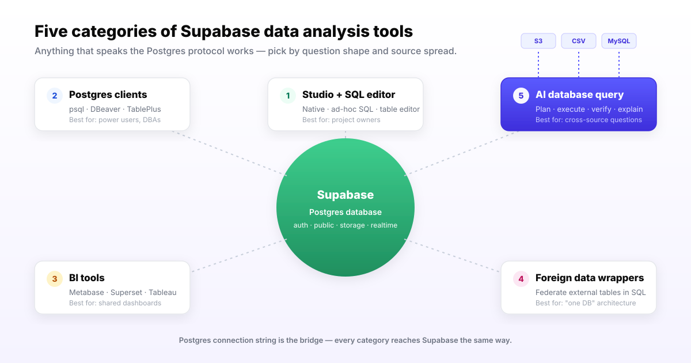

Supabase ships an analytics surface most teams underuse. Out of the box you get four things that matter for analysis.
The browser console exposed at your project URL. It surfaces tables, RLS policies, auth users, storage objects, and a query history.
A Postgres SQL editor inside Studio with saved queries, snippets, and chart output. Most teams ship their first three months of analytics in here.
A spreadsheet view of any table plus a reports area for chart-style queries. Useful for quick "show me last week's signups" answers without leaving Studio.
The escape hatch. Every Supabase project exposes a standard PostgreSQL endpoint, so any tool that speaks the Postgres protocol works — from psql to Tableau to AI agents.
This is the structural fact you need before picking a tool: Supabase is Postgres with a developer experience layer. Your tool universe is everything Postgres can connect to, plus whatever Studio gives you for free.

You will pick one tool from at least two of these categories. The question is which.
What it does: in-browser SQL on your Supabase Postgres, with saved queries, basic charts, and zero setup. Supabase documentation treats Studio as the default analysis interface for project owners.
Where it wins: speed of first answer. You are already logged in. You already see the schema. You already have permission.
Where it breaks: shared dashboards for non-engineers, scheduled reports, role-based access for analysts who should not see auth tables, and anything that needs data outside this one Supabase project.
What it does: connect a desktop or terminal client to the Supabase Postgres connection string and treat it as any other Postgres.
Where it wins: power-user SQL. Schema diffing. Bulk edits. Migrations. Anything you would do on a regular Postgres you do here, including using EXPLAIN on slow queries.
Where it breaks: dashboards, sharing with non-SQL users, and cross-source work. These are SQL surfaces, not analytics platforms.
What it does: point a BI tool at your Supabase project using the Postgres connection string. Metabase and Apache Superset both ship native Postgres support and run cleanly against Supabase.
Where it wins: shared dashboards, scheduled reports, role-based access, embedded analytics for your customers, and the ability to model metrics in a semantic layer.
Where it breaks: open-ended questions, cross-source joins beyond what the tool natively connects to, and "why did this change?" investigations. BI tools answer modeled questions, not new ones.
What it does: Postgres foreign data wrappers let you expose external tables — another Postgres, MySQL, S3, even Stripe — as queryable tables inside Supabase. Then you join across them in SQL.
Where it wins: when you want everything to look like one database to your application and analytics code, and you have the database team to maintain the wrappers.
Where it breaks: operational overhead is real. Every external schema change can break a wrapper. Performance characteristics vary by FDW. Most application teams underestimate the running cost.
What it does: a plain-English interface where you ask a question, the agent retrieves business context and schema, plans the analysis, runs SQL against Supabase plus any other connected source, verifies the result, and delivers an answer with an evidence trail.
Where it wins: open-ended questions, cross-source joins without ETL or FDW setup, and outputs that need a reviewable plan. InfiniSynapse documents Supabase as one of several supported sources alongside MySQL, PostgreSQL, Snowflake, S3, and uploaded files.
Where it breaks: this is not the tool for a fixed daily dashboard, sub-second app queries, or teams without agreed metric definitions to seed the agent's knowledge base.
Use this as the first cut, then read the per-category fit notes above.
| Dimension | Studio + SQL | Postgres clients | BI tools | Foreign data wrappers | AI query agents |
|---|---|---|---|---|---|
| Setup time | Zero | Under 10 minutes | 1-3 days | 1-3 weeks per source | Under 30 minutes per source |
| Open-ended questions | If you write SQL | If you write SQL | Limited to the model | If you write SQL | Native job |
| Cross-source joins | Supabase only | Supabase only | Per-tool connector list | SQL across wrapped sources | Supabase + S3 + CSV + others |
| Business-context handling | In your head | In your head | Semantic layer | None | Bound knowledge base |
| Real-time freshness | Live | Live | Live to cached | Live with overhead | Live |
| Evidence trail | Query history | Client log | Tool logs | Postgres logs | Question + plan + queries + sources |
| Best for | Project owners writing SQL | Power users and DBAs | Shared dashboards | "One database" architectures | Cross-source investigations |
Most Supabase-centric stacks are not Supabase-only. The app database lives in Supabase. Asset metadata and event logs live in S3. Ops and finance data live in a separate Postgres or Snowflake. Marketing keeps the channel cost CSV updated in Google Sheets.
The question your stakeholders actually ask is rarely "show me the users table." It is "which channels are bringing users who actually convert?" That answer lives across three of those four places.
Reasonable teams use a mix. Studio for the first answer. A BI tool for the dashboard the answer becomes. An AI agent for the next open-ended question that does not yet have a dashboard.
"Find users who signed up in the last 30 days, joined our pricing-page A/B test in the GA logs on S3, and have a paid invoice — then compare activation rates by experiment arm."
That spans Supabase auth and app tables, S3 logs, and your billing table. Studio cannot do it alone. A BI tool can do parts of it after a modeling project. An AI database query agent can do it as a single question with a reviewable plan. Pick the path that matches how often you will ask this shape of question.
Connect Supabase plus one other source — S3, another Postgres, or a CSV — and ask one question that crosses them. You get the plan, the queries the agent ran, the result, and the evidence trail. One real run tells you more than any feature list, including this page.
Try InfiniSynapse onlineModeled, recurring, dashboard-style? You need a BI tool plus Studio. Open-ended, "why did X change?" or new every week? You need an AI database query agent plus Studio. Mostly SQL the engineering team writes? Studio plus a Postgres client is enough.
One Supabase project, nothing else? Studio plus a BI tool. Supabase plus an external Postgres your application team owns? FDW is reasonable if you have the bandwidth to maintain it. Supabase plus S3 plus a CSV plus Snowflake? You want an agent that connects to each and joins per question, not an ETL project per question.
Internal tool with two SQL users? Studio is fine. Customer-facing analytics or regulated industry? You want a tool that produces an audit trail — query history, plan, sources, verification. AI query agents are designed to surface that trail by default; BI tools require configuration; Studio gives you query history but not analytical lineage.
InfiniSynapse is the AI database query agent in the fifth category. We connect to your Supabase project read-only by default, plus any other source you want — MySQL, PostgreSQL, Snowflake, S3, or uploaded CSV and Excel files. Your team asks questions in plain English; the agent retrieves your business definitions from a bound knowledge base, plans the analysis, runs SQL across the relevant sources, verifies the result, and delivers an answer with the queries it ran.
For Supabase specifically, InfiniSynapse documentation also covers a write-back mode: the agent can write an analysis result back into a Supabase table when you grant it permission and approve the plan. The detailed workflow lives in our companion page, Supabase data analysis with AI.
For pillar context on the broader pattern see our AI database query guide, and for adjacent stacks see MySQL data analysis tools, MySQL data analysis with AI, data analyst Snowflake, and data analyst Snowflake with AI.
Last updated: 2026-06-15 · Next scheduled review: 2026-09-15
Claims on this page are grounded in Supabase product documentation, PostgreSQL documentation on foreign data wrappers, the Metabase and Apache Superset open-source projects, the BIRD text-to-SQL benchmark, and InfiniSynapse product documentation. Category names follow how tools market themselves, not vendor-coined taxonomies.
Conflict of interest: InfiniSynapse publishes this guide and is one of the five tool categories described. To reduce bias, each category includes explicit failure cases, the comparison table scores InfiniSynapse on the same dimensions as everything else, and the "stay in Studio" panel is genuine — most Supabase teams should start there.
Update cadence: Reviewed every 90 days for terminology, source links, and tool changes.